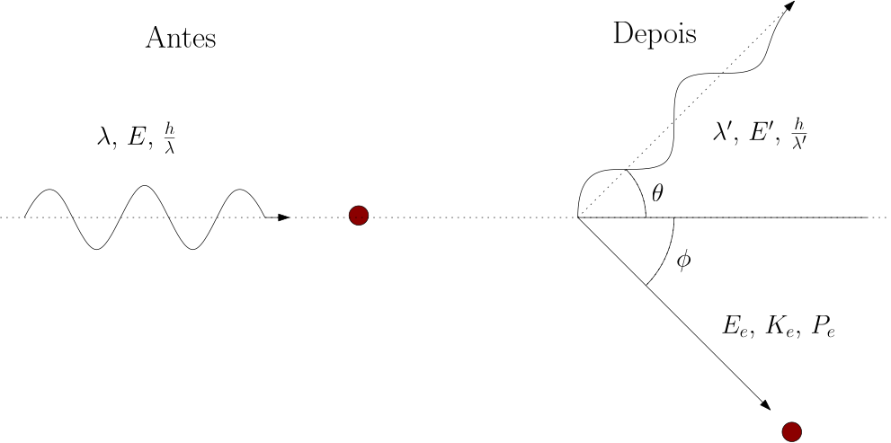
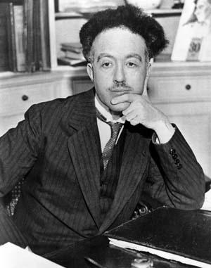
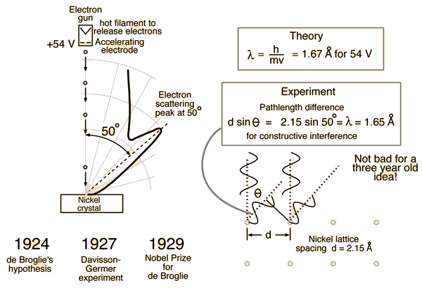

Objetivos
Ao final desta aula, você deverá ser capaz de:
- Explicar o efeito Compton como evidência da natureza corpuscular da radiação eletromagnética.
- Relacionar o deslocamento Compton com o ângulo de espalhamento do fóton.
- Aplicar a conservação relativística de energia e momento em colisões fóton-elétron.
- Interpretar a hipótese de De Broglie e o comprimento de onda associado a partículas materiais.
- Diferenciar os regimes não relativístico e relativístico no cálculo do comprimento de onda de elétrons.
- Analisar a difração de elétrons em cristais como evidência experimental da natureza ondulatória da matéria.
- Conectar a relação de De Broglie com a lei de Bragg em experimentos de difração de elétrons.
- Planejar e interpretar medidas experimentais de anéis de difração em grafita policristalina.
Introdução
Na aula anterior, vimos que o efeito fotoelétrico só pode ser compreendido se a luz for tratada como um conjunto de fótons, cada um com energia \(E = hf\). Nesta aula, avançamos um passo: além de energia, o fóton também carrega momento linear. Essa ideia fica clara no efeito Compton, no qual raios X espalhados por elétrons saem com comprimento de onda maior do que o inicial.
Em seguida, faremos o movimento complementar. Se a luz, tradicionalmente descrita como onda, também se comporta como partícula, será que partículas materiais, como elétrons, também podem se comportar como ondas? A hipótese de Louis de Broglie respondeu que sim. A confirmação experimental veio com a difração de elétrons em cristais, fenômeno que só faz sentido quando associamos um comprimento de onda ao elétron.
A aula, portanto, costura duas ideias centrais da Física Moderna: a luz pode revelar comportamento corpuscular e a matéria pode revelar comportamento ondulatório. Essa é a base da dualidade onda-partícula.
Efeito Compton
O efeito Compton é o espalhamento de um fóton por um elétron fracamente ligado ou aproximadamente livre. No processo, o fóton muda de direção e perde parte de sua energia para o elétron. Como a energia do fóton é \(E = hc/\lambda\), perder energia significa sair com comprimento de onda maior:
\[ \lambda' > \lambda. \]
Arthur H. Compton observou esse efeito em 1923 ao espalhar raios X em grafite. O resultado não podia ser explicado satisfatoriamente pela teoria ondulatória clássica da luz, pois o deslocamento do comprimento de onda dependia do ângulo de espalhamento, e não da intensidade da radiação incidente.

A Ideia Física
No modelo quântico, o espalhamento Compton é tratado como uma colisão entre duas partículas:
- um fóton incidente, com energia \(E = hc/\lambda\) e momento \(p = h/\lambda\);
- um elétron inicialmente em repouso, com energia de repouso \(E_0 = m_ec^2\).
Depois da colisão:
- o fóton sai com comprimento de onda \(\lambda'\) e ângulo de espalhamento \(\theta\);
- o elétron recua com energia cinética \(K\) e momento \(p_e\).

A conservação de energia e momento leva ao resultado:
\[ \Delta \lambda = \lambda' - \lambda = \frac{h}{m_ec}(1-\cos\theta). \]
O termo
\[ \lambda_C = \frac{h}{m_ec} \]
é chamado comprimento de onda de Compton do elétron. Seu valor é:
\[ \lambda_C = 2,43 \times 10^{-12}\,\text{m} = 2,43\,\text{pm}. \]
Assim, a expressão usual do efeito Compton é:
\[ \Delta \lambda = \lambda_C(1-\cos\theta). \]
Consequências Importantes
O deslocamento Compton depende apenas do ângulo de espalhamento:
- para \(\theta = 0^\circ\), não há deslocamento: \(\Delta\lambda = 0\);
- para \(\theta = 90^\circ\), \(\Delta\lambda = \lambda_C\);
- para \(\theta = 180^\circ\), o deslocamento é máximo: \(\Delta\lambda = 2\lambda_C\).
Essa dependência angular foi uma das evidências mais fortes de que o fóton possui momento linear. A intensidade do feixe altera o número de fótons espalhados, mas não o deslocamento de comprimento de onda de cada fóton.
Quando trabalhamos com energia, é útil escrever a energia do fóton espalhado como:
\[ E' = \frac{E}{1+\dfrac{E}{E_0}(1-\cos\theta)}, \]
em que \(E_0 = m_ec^2 = 511\,\text{keV}\) é a energia de repouso do elétron.
Exemplo 6.1: Deslocamento Compton e Energia do Elétron
Um fóton de raios X com comprimento de onda inicial \(\lambda = 5,20\,\text{pm}\) é espalhado por um elétron aproximadamente livre. O ângulo de espalhamento do fóton é \(\theta = 47,0^\circ\). Determine:
- a energia do fóton incidente;
- o comprimento de onda do fóton espalhado;
- a energia do fóton espalhado;
- a energia cinética do elétron.
Solução:
A energia do fóton incidente é:
\[ E = \frac{hc}{\lambda} = \frac{1240\,\text{keV}\,\text{pm}}{5,20\,\text{pm}} = 238\,\text{keV}. \]
O deslocamento Compton é:
\[ \Delta\lambda = 2,43\,\text{pm}(1-\cos47,0^\circ) = 0,773\,\text{pm}. \]
Logo:
\[ \lambda' = 5,20\,\text{pm} + 0,773\,\text{pm} = 5,97\,\text{pm}. \]
A energia do fóton espalhado é:
\[ E' = \frac{1240\,\text{keV}\,\text{pm}}{5,97\,\text{pm}} = 208\,\text{keV}. \]
Pela conservação da energia, a energia cinética recebida pelo elétron é:
\[ K = E - E' = 238\,\text{keV} - 208\,\text{keV} = 30\,\text{keV}. \]
Resposta: \(E = 238\,\text{keV}\), \(\lambda' = 5,97\,\text{pm}\), \(E' = 208\,\text{keV}\) e \(K = 30\,\text{keV}\).
Exemplo 6.2: Espalhamento para Trás
Um fóton de energia inicial \(E = 100\,\text{keV}\) sofre espalhamento Compton por um elétron em repouso e retorna na direção oposta à inicial, isto é, \(\theta = 180^\circ\). Determine a energia do fóton espalhado e a energia cinética do elétron.
Solução:
Para \(\theta = 180^\circ\), temos \(1-\cos\theta = 2\). Assim:
\[ E' = \frac{E}{1+\dfrac{2E}{E_0}} = \frac{100\,\text{keV}}{1+\dfrac{2(100\,\text{keV})}{511\,\text{keV}}} = 71,9\,\text{keV}. \]
A energia cinética do elétron é:
\[ K = E - E' = 100\,\text{keV} - 71,9\,\text{keV} = 28,1\,\text{keV}. \]
Resposta: \(E' = 71,9\,\text{keV}\) e \(K = 28,1\,\text{keV}\).
Ondas de Matéria e Relação de De Broglie
Em 1924, Louis de Broglie propôs que a dualidade onda-partícula não deveria ser exclusiva da radiação. Se fótons possuem energia e momento, partículas materiais também deveriam possuir uma onda associada.

A relação proposta por De Broglie é:
\[ \lambda = \frac{h}{p}, \]
em que:
- \(\lambda\) é o comprimento de onda associado à partícula;
- \(h\) é a constante de Planck;
- \(p\) é o momento linear da partícula.
Para objetos macroscópicos, o momento é tão grande que o comprimento de onda de De Broglie fica absurdamente pequeno. Por isso não observamos difração de bolas, carros ou pessoas. Para elétrons, prótons, nêutrons e átomos, entretanto, esse comprimento de onda pode ser comparável a distâncias interatômicas, tornando efeitos ondulatórios mensuráveis.
Elétrons Acelerados por uma Diferença de Potencial
Quando um elétron é acelerado por uma diferença de potencial \(U\), ele ganha energia cinética:
\[ K = eU. \]
No regime não relativístico:
\[ K = \frac{p^2}{2m_e}. \]
Portanto:
\[ p = \sqrt{2m_e eU} \]
e
\[ \lambda = \frac{h}{\sqrt{2m_e eU}}. \]
Uma forma prática, com \(U\) em volts e \(\lambda\) em angstroms, é:
\[ \lambda(\text{\AA}) = \frac{12,27}{\sqrt{U(\text{V})}}. \]
Se \(U\) for dado em quilovolts, também podemos escrever:
\[ \lambda(\text{\AA}) = \sqrt{\frac{0,150}{U(\text{kV})}}. \]
Regime Relativístico
A expressão anterior é adequada quando a velocidade do elétron é pequena em comparação com a velocidade da luz. Como referência prática, se \(v < 0,1c\), o tratamento não relativístico costuma ser suficiente para problemas introdutórios.
Quando a energia cinética é comparável à energia de repouso do elétron, \(E_0 = 511\,\text{keV}\), devemos usar:
\[ pc = K\sqrt{1+\frac{2E_0}{K}}. \]
Assim, o comprimento de onda de De Broglie pode ser escrito como:
\[ \lambda = \frac{hc}{K\sqrt{1+\dfrac{2E_0}{K}}}. \]
Essa forma é especialmente útil quando \(K\) está em keV e \(hc = 1240\,\text{keV}\,\text{pm}\).
Exemplo 6.3: Elétron Acelerado por 150 V
Um elétron parte aproximadamente do repouso e é acelerado por uma diferença de potencial \(U = 150\,\text{V}\). Determine:
- sua energia cinética;
- seu comprimento de onda de De Broglie;
- sua velocidade.
Solução:
A energia cinética é:
\[ K = eU = 150\,\text{eV}. \]
O comprimento de onda é:
\[ \lambda = \frac{12,27}{\sqrt{150}}\,\text{\AA} = 1,00\,\text{\AA}. \]
A velocidade pode ser obtida por \(K = m_ev^2/2\). Como \(150\,\text{eV} = 2,40\times10^{-17}\,\text{J}\):
\[ v = \sqrt{\frac{2K}{m_e}} = \sqrt{\frac{2(2,40\times10^{-17}\,\text{J})}{9,11\times10^{-31}\,\text{kg}}} = 7,26\times10^6\,\text{m/s}. \]
Como \(v/c \approx 0,024\), o tratamento não relativístico é adequado.
Resposta: \(K = 150\,\text{eV}\), \(\lambda = 1,00\,\text{\AA}\) e \(v = 7,26\times10^6\,\text{m/s}\).
Exemplo 6.4: Elétron Relativístico
Um elétron tem energia cinética \(K = 100\,\text{keV}\). Calcule seu comprimento de onda de De Broglie usando:
- a expressão relativística;
- a expressão não relativística;
- o erro percentual da aproximação não relativística.
Solução:
Pela expressão relativística:
\[ \lambda = \frac{1240\,\text{keV}\,\text{pm}}{100\,\text{keV}\sqrt{1+\dfrac{2(511\,\text{keV})}{100\,\text{keV}}}} = 3,70\,\text{pm}. \]
Pela expressão não relativística:
\[ \lambda = \frac{hc}{\sqrt{2KE_0}} = \frac{1240\,\text{keV}\,\text{pm}}{\sqrt{2(100\,\text{keV})(511\,\text{keV})}} = 3,88\,\text{pm}. \]
O erro percentual é:
\[ E\% = \left|\frac{3,88-3,70}{3,70}\right|100\% = 4,9\%. \]
Resposta: \(\lambda_{\text{rel}} = 3,70\,\text{pm}\), \(\lambda_{\text{nr}} = 3,88\,\text{pm}\) e erro de aproximadamente \(4,9\%\).
Difração de Elétrons
A hipótese de De Broglie foi confirmada em 1927 por experimentos independentes de Davisson e Germer, nos Estados Unidos, e de G. P. Thomson, no Reino Unido. Em ambos os casos, elétrons produziram padrões de difração, comportamento típico de ondas.
No experimento de Davisson-Germer, elétrons acelerados incidiam sobre um cristal de níquel. A intensidade dos elétrons espalhados apresentava máximos em ângulos específicos, do mesmo modo que ocorre na difração de raios X por cristais.

A interpretação é direta: se o espaçamento entre planos cristalinos é da ordem do comprimento de onda de De Broglie dos elétrons, ocorre interferência construtiva para certos ângulos.
Lei de Bragg
Para ondas espalhadas por planos cristalinos separados por uma distância \(d\), a condição de interferência construtiva é:
\[ 2d\sin\theta = n\lambda, \]
em que:
- \(d\) é a distância entre planos cristalinos;
- \(\theta\) é o ângulo de Bragg;
- \(n\) é a ordem de difração;
- \(\lambda\) é o comprimento de onda da onda incidente.
Para elétrons, usamos a própria onda de De Broglie:
\[ \lambda = \frac{h}{p}. \]
Assim, a difração de elétrons une duas ideias: a condição geométrica de Bragg e a hipótese quântica de De Broglie.
Grafita Policristalina e Anéis de Difração
Em uma amostra policristalina de grafita, há muitos pequenos cristais orientados aleatoriamente. O feixe de elétrons encontra planos cristalinos em várias orientações, produzindo cones de difração. Quando esses cones atingem uma tela fluorescente, aparecem como anéis.
No roteiro experimental exp-5.2.tex, o
experimento virtual usa elétrons acelerados por tensões
entre \(4,0\,\text{kV}\) e \(9,0\,\text{kV}\). Para cada
tensão, medem-se os diâmetros dos anéis interno e
externo.
As distâncias interplanares principais usadas no roteiro são:
- anel interno: \(d_1 = 2,13\,\text{\AA}\);
- anel externo: \(d_2 = 1,23\,\text{\AA}\).
Com o raio do bulbo \(R = 65\,\text{mm}\) e usando a aproximação de pequenos ângulos, o roteiro chega à relação:
\[ \lambda_{\text{Bragg}} = \frac{dD}{260\,\text{mm}}, \]
em que \(D\) é o diâmetro do anel de difração.
Essa relação permite comparar dois comprimentos de onda:
- \(\lambda_{\text{Broglie}}\), calculado a partir da tensão aceleradora;
- \(\lambda_{\text{Bragg}}\), calculado a partir da geometria dos anéis.
Quando os dois valores concordam dentro das incertezas experimentais, temos uma verificação quantitativa da natureza ondulatória dos elétrons.
Exemplo 6.5: Anéis de Difração em Grafita
Em um experimento de difração de elétrons em grafita, a tensão aceleradora é \(U = 5,0\,\text{kV}\). Determine:
- o comprimento de onda de De Broglie do elétron;
- o diâmetro esperado para o anel interno, usando \(d_1 = 2,13\,\text{\AA}\);
- o diâmetro esperado para o anel externo, usando \(d_2 = 1,23\,\text{\AA}\).
Solução:
Com \(U\) em kV:
\[ \lambda_{\text{Broglie}} = \sqrt{\frac{0,150}{5,0}}\,\text{\AA} = 0,173\,\text{\AA}. \]
Da relação experimental:
\[ \lambda_{\text{Bragg}} = \frac{dD}{260\,\text{mm}}, \]
temos:
\[ D = \frac{260\,\lambda}{d}. \]
Para o anel interno:
\[ D_{\text{int}} = \frac{260(0,173)}{2,13} = 21,1\,\text{mm}. \]
Para o anel externo:
\[ D_{\text{ext}} = \frac{260(0,173)}{1,23} = 36,6\,\text{mm}. \]
Resposta: \(\lambda = 0,173\,\text{\AA}\), \(D_{\text{int}} = 21,1\,\text{mm}\) e \(D_{\text{ext}} = 36,6\,\text{mm}\).
Síntese Conceitual
O efeito Compton mostra que a luz carrega energia e momento como se fosse composta por partículas. A difração de elétrons mostra que partículas materiais podem gerar interferência e difração como ondas. A dualidade onda-partícula não significa que luz e matéria alternem entre duas identidades clássicas simples; significa que os modelos clássicos de onda e partícula são aproximações parciais de um comportamento quântico mais profundo.
Na prática:
- no efeito fotoelétrico, a energia quantizada do fóton explica a emissão de elétrons;
- no efeito Compton, o momento do fóton explica a mudança de comprimento de onda no espalhamento;
- na difração de elétrons, o comprimento de onda de De Broglie explica os máximos de interferência observados em cristais.
Exercícios de Fixação
- 6.1)
- Sobre o efeito Compton, é correto afirmar que:
- O fóton espalhado sempre sai com menor comprimento de onda que o fóton incidente.
- O deslocamento Compton depende apenas da intensidade do feixe incidente.
- O deslocamento Compton depende do ângulo de espalhamento do fóton.
- O efeito Compton só ocorre para luz visível.
- O elétron permanece necessariamente em repouso após a colisão.
- 6.2)
- A principal evidência física fornecida pelo efeito Compton é que:
- A luz sempre se comporta apenas como onda.
- A luz possui momento linear, além de energia.
- A energia do fóton depende da intensidade da luz.
- Elétrons não podem receber energia de fótons.
- O comprimento de onda da radiação é sempre conservado.
- 6.3)
- Um fóton de raios X sofre espalhamento Compton com \(\theta = 90^\circ\). O deslocamento de comprimento de onda é:
- \(0\)
- \(1,22\,\text{pm}\)
- \(2,43\,\text{pm}\)
- \(4,86\,\text{pm}\)
- \(9,72\,\text{pm}\)
- 6.4)
- Um fóton de comprimento de onda inicial \(10,0\,\text{pm}\) é espalhado por um elétron aproximadamente livre com \(\theta = 180^\circ\). Determine:
- o deslocamento Compton;
- o comprimento de onda espalhado;
- a energia do fóton incidente;
- a energia do fóton espalhado;
- a energia cinética do elétron.
- 6.5)
- Um fóton de energia inicial \(300\,\text{keV}\) é espalhado por um elétron em repouso com ângulo \(\theta = 60,0^\circ\). Calcule:
- a energia do fóton espalhado;
- a energia cinética do elétron;
- o deslocamento Compton.
- 6.6)
- A relação de De Broglie afirma que:
- Apenas fótons possuem comprimento de onda.
- O comprimento de onda de uma partícula é proporcional ao seu momento.
- O comprimento de onda de uma partícula é inversamente proporcional ao seu momento.
- Elétrons não sofrem interferência.
- Partículas materiais não podem ser descritas por ondas.
- 6.7)
- Um elétron é acelerado por uma diferença de potencial de \(100\,\text{V}\). Determine:
- sua energia cinética em eV;
- seu comprimento de onda de De Broglie em angstroms;
- sua velocidade aproximada em m/s.
- 6.8)
- Um elétron tem energia cinética de \(25,0\,\text{keV}\). Determine seu comprimento de onda de De Broglie em pm usando a aproximação não relativística. Em seguida, explique se essa aproximação é razoável.
- 6.9)
- Explique, em poucas linhas, por que não observamos difração em objetos macroscópicos, como uma bola em movimento, embora a relação de De Broglie também se aplique a eles.
- 6.10)
- Em um experimento de difração, elétrons com comprimento de onda \(\lambda = 1,67\,\text{\AA}\) incidem em um cristal de níquel cuja distância interplanar efetiva é \(d = 2,15\,\text{\AA}\). Para \(n=1\), determine o ângulo de Bragg \(\theta\) usando \(n\lambda = d\sin\theta\).
Exercícios de Caráter Experimental
Os exercícios 6.11 a
6.15 devem ser resolvidos com base no
roteiro experimental exp-5.2.tex, sobre
difração de elétrons em grafita. Use a simulação
indicada no roteiro: https://www.laboratoriovirtual.fisica.ufc.br/difracao-de-eletrons.
- 6.11)
- Objetivo: observar qualitativamente a formação dos anéis de difração.
Acesse a simulação, ligue a fonte de \(6,3\,\text{Vac}\) e ajuste a fonte de alta tensão para \(U = 4,0\,\text{kV}\). Observe os anéis formados no anteparo fluorescente. Em seguida, aumente a tensão gradualmente até \(9,0\,\text{kV}\).
Pergunta: O que acontece com os diâmetros dos anéis quando a tensão aceleradora aumenta? Explique usando a relação \(\lambda_{\text{Broglie}} = \sqrt{0,150/U}\,\text{\AA}\).
- 6.12)
- Objetivo: comparar \(\lambda_{\text{Broglie}}\) e \(\lambda_{\text{Bragg}}\) para o anel interno.
Para as tensões \(4,0\,\text{kV}\), \(5,0\,\text{kV}\), \(6,0\,\text{kV}\), \(7,0\,\text{kV}\), \(8,0\,\text{kV}\) e \(9,0\,\text{kV}\), meça o diâmetro interno \(D_{\text{int}}\) do anel de difração. Use \(d_1 = 2,13\,\text{\AA}\) e calcule:
\[ \lambda_{\text{Bragg}} = \frac{d_1D_{\text{int}}}{260\,\text{mm}}. \]
Pergunta: Compare os valores de \(\lambda_{\text{Bragg}}\) com os valores de \(\lambda_{\text{Broglie}}\). A concordância melhora, piora ou permanece semelhante ao longo da faixa de tensões?
- 6.13)
- Objetivo: comparar \(\lambda_{\text{Broglie}}\) e \(\lambda_{\text{Bragg}}\) para o anel externo.
Repita o procedimento do exercício 6.12, mas agora medindo o diâmetro externo \(D_{\text{ext}}\). Use \(d_2 = 1,23\,\text{\AA}\) e calcule:
\[ \lambda_{\text{Bragg}} = \frac{d_2D_{\text{ext}}}{260\,\text{mm}}. \]
Pergunta: Os resultados do anel externo confirmam a relação de De Broglie com a mesma qualidade que os do anel interno? Discuta possíveis diferenças de leitura experimental entre os dois anéis.
- 6.14)
- Objetivo: determinar experimentalmente a constante de Planck.
Com os dados coletados, escolha uma das séries experimentais de comprimento de onda obtidas por Bragg, isto é, a série do anel interno ou a série do anel externo. Construa um gráfico de \(\lambda_{\text{Bragg}}\) em função de \(1/\sqrt{U}\), com \(U\) em volts e \(\lambda\) em metros. A relação teórica é:
\[ \lambda = \frac{h}{\sqrt{2m_ee}}\frac{1}{\sqrt{U}}. \]
Pergunta: A partir do coeficiente angular da reta, determine um valor experimental para \(h\). Compare com \(h = 6,626\times10^{-34}\,\text{J}\,\text{s}\) e calcule o erro percentual. Se desejar, repita a análise para os dois anéis e compare os valores obtidos.
- 6.15)
- Objetivo: determinar as distâncias interplanares da grafita.
Use seus dados de \(D_{\text{int}}\) e \(D_{\text{ext}}\) e os valores de \(\lambda_{\text{Broglie}}\) calculados para cada tensão. A partir da relação:
\[ \lambda = \frac{dD}{260\,\text{mm}}, \]
determine experimentalmente \(d_1\) e \(d_2\) por regressão linear. Compare seus resultados com os valores de referência \(d_1 = 2,13\,\text{\AA}\) e \(d_2 = 1,23\,\text{\AA}\).
Pergunta: Quais foram os valores encontrados para \(d_1\) e \(d_2\)? Calcule os erros percentuais e indique quais fontes de incerteza mais influenciaram o resultado.
Gabarito dos Exercícios
6.1) Alternativa c.
6.2) Alternativa b.
6.3) Alternativa c. Para \(\theta = 90^\circ\), \(\Delta\lambda = \lambda_C = 2,43\,\text{pm}\).
6.4) a) \(\Delta\lambda = 4,86\,\text{pm}\). b) \(\lambda' = 14,86\,\text{pm}\). c) \(E = 124\,\text{keV}\). d) \(E' = 83,4\,\text{keV}\). e) \(K = 40,6\,\text{keV}\).
6.5) a) \(E' = 232\,\text{keV}\). b) \(K = 68\,\text{keV}\). c) \(\Delta\lambda = 1,22\,\text{pm}\).
6.6) Alternativa c.
6.7) a) \(K = 100\,\text{eV}\). b) \(\lambda = 1,23\,\text{\AA}\). c) \(v = 5,93\times10^6\,\text{m/s}\).
6.8) \(\lambda = 7,75\,\text{pm}\). Como \(25,0\,\text{keV}\) ainda é bem menor que \(511\,\text{keV}\), a aproximação não relativística é razoável, embora já produza erro perceptível se alta precisão for exigida.
6.9) Para objetos macroscópicos, o momento \(p\) é muito grande. Como \(\lambda = h/p\), o comprimento de onda associado fica extremamente pequeno, muito menor que qualquer abertura ou obstáculo experimental comum. Por isso os efeitos de difração são desprezíveis.
6.10) \(\sin\theta = 1,67/2,15 = 0,777\), portanto \(\theta = 51,0^\circ\).
6.11) Ao aumentar \(U\), o comprimento de onda de De Broglie diminui. Como \(D\) é proporcional a \(\lambda\), os diâmetros dos anéis diminuem.
6.12) Espera-se que \(\lambda_{\text{Bragg}}\) e \(\lambda_{\text{Broglie}}\) sejam próximos. Diferenças devem ser discutidas a partir da incerteza na medida de \(D_{\text{int}}\), da espessura visual do anel e da aproximação de pequenos ângulos.
6.13) Espera-se concordância semelhante para o anel externo. O anel externo pode ser mais difícil de medir dependendo do contraste, da largura do anel e da leitura da régua na simulação.
6.14) O gráfico deve ser aproximadamente linear. O valor experimental de \(h\) deve ficar próximo de \(6,626\times10^{-34}\,\text{J}\,\text{s}\), com erro percentual calculado por:
\[ E\% = \left|\frac{h_{\text{exp}}-h_{\text{ref}}}{h_{\text{ref}}}\right|100\%. \]
6.15) Os valores experimentais devem ser comparados com \(d_1 = 2,13\,\text{\AA}\) e \(d_2 = 1,23\,\text{\AA}\). As principais fontes de incerteza são a leitura dos diâmetros, a definição visual do centro dos anéis, a calibração da régua, a incerteza da tensão e a aproximação geométrica usada para pequenos ângulos.
Bibliografia
COMPTON, A. H. A Quantum Theory of the Scattering of X-rays by Light Elements. Physical Review, v. 21, n. 5, p. 483-502, 1923. Disponível em: https://journals.aps.org/pr/abstract/10.1103/PhysRev.21.483.
DAVISSON, C.; GERMER, L. H. Diffraction of Electrons by a Crystal of Nickel. Physical Review, v. 30, n. 6, p. 705-740, 1927. Disponível em: https://journals.aps.org/pr/abstract/10.1103/PhysRev.30.705.
DE BROGLIE, L. Recherches sur la théorie des quanta. Paris: Masson, 1924. Tese de Doutorado.
EISBERG, R.; RESNICK, R. Física Quântica: Átomos, Moléculas, Sólidos, Núcleos e Partículas. Rio de Janeiro: Elsevier, 1979.
HALLIDAY, D.; RESNICK, R.; WALKER, J. Fundamentos de Física: Óptica e Física Moderna. 10. ed. Rio de Janeiro: LTC, 2016. v. 4.
NOBELPRIZE.ORG. The Nobel Prize in Physics 1927. Disponível em: https://www.nobelprize.org/prizes/physics/1927/summary/.